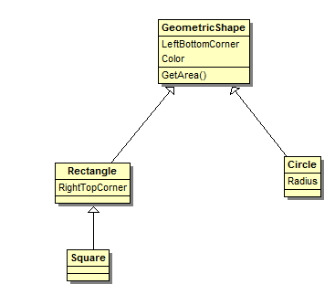

From the first week you should have learnt how to use Git to manage your source code
In this week we will start to look at the basic parts of actual boss scripting.
Today now is about how to
-
What the first script looks like
-
A few elemental things about object oriented programming (OOP)
1. First Part:
1.1. The very first script
In commit 55481e02, see Commit on Github I added the following patch to the icc_branch:
From 55481e026600049a66277ee4e71110b1ba797418 Mon Sep 17 00:00:00 2001
From: Schmoozerd <schmoozerd@scriptdev2.com>
Date: Tue, 11 Oct 2011 18:51:53 +0200
Subject: [PATCH] ICC, Festergut - Implement first script
---
.../icecrown_citadel/boss_festergut.cpp | 23 ++++++++++++++++++++
sql/mangos_scriptname_full.sql | 3 ++
sql/updates/r8800_mangos.sql | 1 +
3 files changed, 27 insertions(+), 0 deletions(-)
create mode 100644 sql/updates/r8800_mangos.sql
diff --git a/scripts/northrend/icecrown_citadel/icecrown_citadel/boss_festergut.cpp b/scripts/northrend/icecrown_citadel/icecrown_citadel/boss_festergut.cpp
index d0ce130..acd358d 100644
--- a/scripts/northrend/icecrown_citadel/icecrown_citadel/boss_festergut.cpp
+++ b/scripts/northrend/icecrown_citadel/icecrown_citadel/boss_festergut.cpp
@@ -38,6 +38,29 @@ enum
SAY_FESTERGUT_DEATH = -1631091,
};
+struct MANGOS_DLL_DECL boss_festergutAI : public ScriptedAI  +{
+ boss_festergutAI(Creature* pCreature) : ScriptedAI(pCreature)
+ {
+ Reset();
+ }
+
+ void Reset()
+{
+ boss_festergutAI(Creature* pCreature) : ScriptedAI(pCreature)
+ {
+ Reset();
+ }
+
+ void Reset()  + {
+ }
+};
+
+CreatureAI* GetAI_boss_festergut(Creature* pCreature)
+ {
+ }
+};
+
+CreatureAI* GetAI_boss_festergut(Creature* pCreature)  +{
+ return new boss_festergutAI(pCreature);
+}
+
void AddSC_boss_festergut()
{
+ Script* pNewScript;
+{
+ return new boss_festergutAI(pCreature);
+}
+
void AddSC_boss_festergut()
{
+ Script* pNewScript;  +
+ pNewScript = new Script;
+ pNewScript->Name = "boss_festergut";
+ pNewScript->GetAI = &GetAI_boss_festergut;
+ pNewScript->RegisterSelf();
}
diff --git a/sql/mangos_scriptname_full.sql b/sql/mangos_scriptname_full.sql
index 8d95c69..de37e42 100644
--- a/sql/mangos_scriptname_full.sql
+++ b/sql/mangos_scriptname_full.sql
@@ -707,6 +707,9 @@ UPDATE creature_template SET ScriptName='npc_silvermoon_harry' WHERE entry=24539
/* ICECROWN CITADEL */
/* */
+
+ pNewScript = new Script;
+ pNewScript->Name = "boss_festergut";
+ pNewScript->GetAI = &GetAI_boss_festergut;
+ pNewScript->RegisterSelf();
}
diff --git a/sql/mangos_scriptname_full.sql b/sql/mangos_scriptname_full.sql
index 8d95c69..de37e42 100644
--- a/sql/mangos_scriptname_full.sql
+++ b/sql/mangos_scriptname_full.sql
@@ -707,6 +707,9 @@ UPDATE creature_template SET ScriptName='npc_silvermoon_harry' WHERE entry=24539
/* ICECROWN CITADEL */
/* */
 +/* ICECROWN CITADEL */
+UPDATE creature_template SET ScriptName='boss_festergut' WHERE entry=36626;
+
/* FORGE OF SOULS */
UPDATE creature_template SET ScriptName='boss_bronjahm' WHERE entry=36497;
UPDATE creature_template SET ScriptName='npc_corrupted_soul_fragment' WHERE entry=36535;
diff --git a/sql/updates/r8800_mangos.sql b/sql/updates/r8800_mangos.sql
new file mode 100644
index 0000000..262da6d
--- /dev/null
+++ b/sql/updates/r8800_mangos.sql
@@ -0,0 +1 @@
+/* ICECROWN CITADEL */
+UPDATE creature_template SET ScriptName='boss_festergut' WHERE entry=36626;
+
/* FORGE OF SOULS */
UPDATE creature_template SET ScriptName='boss_bronjahm' WHERE entry=36497;
UPDATE creature_template SET ScriptName='npc_corrupted_soul_fragment' WHERE entry=36535;
diff --git a/sql/updates/r8800_mangos.sql b/sql/updates/r8800_mangos.sql
new file mode 100644
index 0000000..262da6d
--- /dev/null
+++ b/sql/updates/r8800_mangos.sql
@@ -0,0 +1 @@  +UPDATE creature_template SET ScriptName='boss_festergut' WHERE entry=36626;
--
1.7.6.msysgit.0
+UPDATE creature_template SET ScriptName='boss_festergut' WHERE entry=36626;
--
1.7.6.msysgit.0
1.1.1. How this commit and patch here were created:
<Edit the required stuff> git add sql/updates/r8800_mangos.sql ## To track this new file git commit -a -m "ICC, Festergut - Implement first script" ## Commit all changes and name commit msg git log ## To get the hash-id git format-patch HEAD^..HEAD --stdout > temp.patch ## Get the patch (and pasted here)
1.1.2. What can be seen here
Actually there are 6 main steps that I did - Don’t worry, they should be clear by the end of the day:
| The actual class for the bossAI (AI = Artificial Intelligence) to be scripted | |
| Any SD2 Boss script must implement the Reset function | |
| The wrapper to actually create an instance of the implemented class | |
|
Some internal magic to help registering a script to SD2 side such that it can be used after assigned to the database.
Remark especially that the to be used ScriptName is assigned here, too | |
| The required SQL-changes for mangos_scriptname_full.sql | |
| The required SQL-changes for the sql update file |
1.2. Object oriented programming
This is now about the most fundamental aspect — objects and classes
1.2.1. What is a class? What is an object?
A class is the shape or an idea of things that we have in our mind.
I will stay with the name idea for now, because I think to distinct between classes and objects, it is (for now) easier to use the words "thing" and "idea".
When you go outside, then you might see an actual tree that grows high up into the air. This tree is an actual thing, that you can see, feel, smell and so on, it is part of the reality. Nearby, there might be another tree, which would be another thing, but also an tree. As a matter of fact, to read this sentence you must have an idea of trees in your mind (connected to the word tree), which helps you to recognise a tree when you see one.
So, in your mind there lives the idea of tree, and in reality you can see things that fit into the category tree - which is the idea tree you have.
If you want to know if a thing is a tree, you might compare the properties of the thing you see to the idea of tree you have in your mind. In your example (tree) reasonable properties would be: A tree has roots, a stem, branches, and in summer the branches have leaves or needles. Also you might expect that the stem is quite tall, the roots are mostly in the earth, and so on..
Important of the concept of ideas is that you can differ: No real thing is exactly like the idea of it, and no idea is exactly like any real thing. They both live in different planes.
About functionality: * An idea can have attributes, expected behaviour (drop leaves in winter), and ways to modify it (nick an apple) * The things realises - which means fill the values and behaviour - of these functionalities
In OOP (Object Oriented Programming) this concept is used in this way: * An idea is represented by a class, * A thing is represented by an object (or often called instance (of the class) )
Note: I feel this is not well written, any improvements are very welcome
1.2.2. A class hierarchy
As noted above the concepts of classes and objects is very natural to the way we think, and there is one other big part that is important: Inheritance Classes can be subclasses of other classes, or parent classes of other classes.
This means, a class "A" which is a subclass of class "B" inherits all stuff from class B, but might overwrite a few things, or extend functionality.
If you now have many classes, which have sub and super classes, you have a hierarchy.
As this is also a very fundamental concept, I will give a very simple example:
Possible class hierarchy of two dimensional elemental geometric shapes

{kind=link}
There you can see (in some UML notation) the setup:
-
A super class which is rather abstract, named GeometricalShape
This class has the attribute of the LeftBottomCorner (of type Point ), a Color attribute and a function to get the area GetArea
-
A "Circle" is a geometric shape, hence it is realised as a subclass.
Note that the attributes Color and LeftBottomCorner are inherited from GeometricShape.
The function GetArea needs to be overwritten to reproduce the expected result
-
A "Rectangular" is also a geometric shape, however there we need an additional point (Could have also used height and width).
-
A "Square" is a specialisation of a rectangular, hence realised as subclass
|
|
These are only classes, no objects yet! |
C++ implementation of this hierarchy
This is a sketch of normal C++ implementation
class GeometricShape{ m_fRadius = radius; } float GetArea()
{ return radius*radius*(float)PI; } float m_fRadius;
}; ...
What do the different lines mean:
| This tells C++ that a new class starts which is named GeometricShape | |
|
This is the constructor of the class (when an object of a class is instantiated, the constructor is the first thing that is called)
Here we tell the constructor to require two parameters, one of type Point, and one of type int | |
| Here we set the internal values of the class to the parameters given in the constructor | |
|
This is the default function to return the area of the geometric shape
The visual keyword is there, to mark this function to be overwritten by subclasses | |
|
These are two member variables for the class.
This is in Hungarian Notation which we use in ScriptDev2. For more information see SD2 Coding Standards | |
| This defines Circle as subclass of GeometricShape (by the :) | |
| Constructor for Circle, we call the constructor of GeometricShape, and also set the new member variable | |
| Overwrite the GetArea function to return the expected value for a circle. | |
| A member variable of Circle |
|
|
Some overview for OOP: wikipedia OOP overview - This covers mostly concepts A fair warning about the example I chosed here: Why it works in this simple way, but may fail in other cases Some C++ specific tutorial, which goes far further than such a small guide like this would ever do: http://www.desy.de/gna/html/cc/Tutorial/tutorial.html |
2. Back to the class hierarchy for boss scripts in ScriptDev2
struct MANGOS_DLL_DECL boss_festergutAI : public ScriptedAI
In this line we define the class boss_festergutAI as a subclass of ScriptedAI
| |
| The constructor for our class: We inherit stuff from ScriptedAI, and call its constructor first, then we do some own code | |
| Reset is a so called "pure virtual function" which means a subclass must implement it, else wise it won’t compile | |
|
This is now something new. If you have read the stuff above carefully you would have noted that we have yet only implemented classes, but never objects.
But of course we want to handle objects, each boss should have a specific object/ instance of the AI loaded. This is done with the new keyword. | |
| This line creates a new object of the class boss_festergutAI and handles this newly created class back to some other places (actually to mangos) where it is assigned to the real boss. |
3. End of first part
|
|
Exercise 1 - Test the first script!
Compile SD2 with these changes, and then test the script on boss festergut. As the script does not do very much, use the .npc aiinfo command, to see if it is actually loaded |
What you should have seen today:
-
Basic things of OOP: Classes and Objects
-
Inheritance as fundamental concept to make the programmers' live easier
What comes next:
-
A few notes to class hierarchy used in ScriptDev2 (CreatureAI ← ScriptedAI ← boss_*AI)
-
How to bring live to the first script.